3D prentun
Fyrri hluti verkefnisins snýst um að hanna módel fyrir 3D prentun sem ekki væri hægt að framkvæma með frádráttar framleiðslu. Svo verður módelið prentað út. Áður en hafist var handa við að hanna og prenta módelið þarf að prenta út prufu í prentaranum. Nánar má lesa um þá framkvæmd hér. Þegar þær niðurstöður voru komnar á hreint komumst við að því að prentarinn átti erfitt með að höndla halla uppá 50-60° og meira með engann stuðning. Við prentun á okkar módeli þarf því að passa að hafa stuðning við hlutinn þar sem hallinn er meiri en 60° í það minnsta.
Ég hófst þá handa við að finna eitthvað sem ég gæti hugsað mér að hanna og prenta út. Ég googlaði allskyns hugmyndir en fann ekkert sem mér leist sérstaklega vel á. Á endanum ákvað ég að hanna litla skál sem ég gæti notað undir lykla og aðra smáhluti. Ég byrjaði á að teikna form sem ég taldi vera flott og myndi koma vel út sem skál. Formið sem teiknað var er svo revolvað og ásinn sem er snúið um verður miðjan á skálinni. Þá var komin skál en botnin var þó ekki flatur og myndi hún seint standa sjálf. Ég teiknaði því ferhyrning sem skaraðist yfir hluta botnsins, án þess þó að ég færi alveg í gegnum skálina. Sá ferhyrningur er svo extrudeaður til þess að skera af botninn á skálinni. Nú er ég þá kominn með skál sem er með flatan botn og getur vonandi staðið upprétt sjálf.
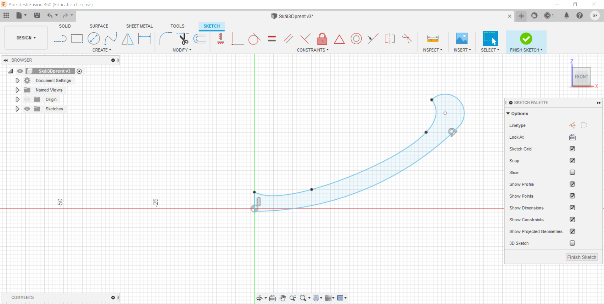
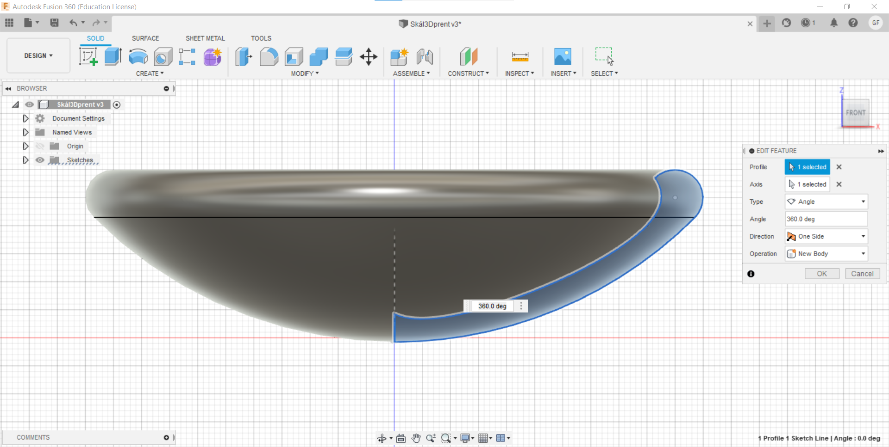
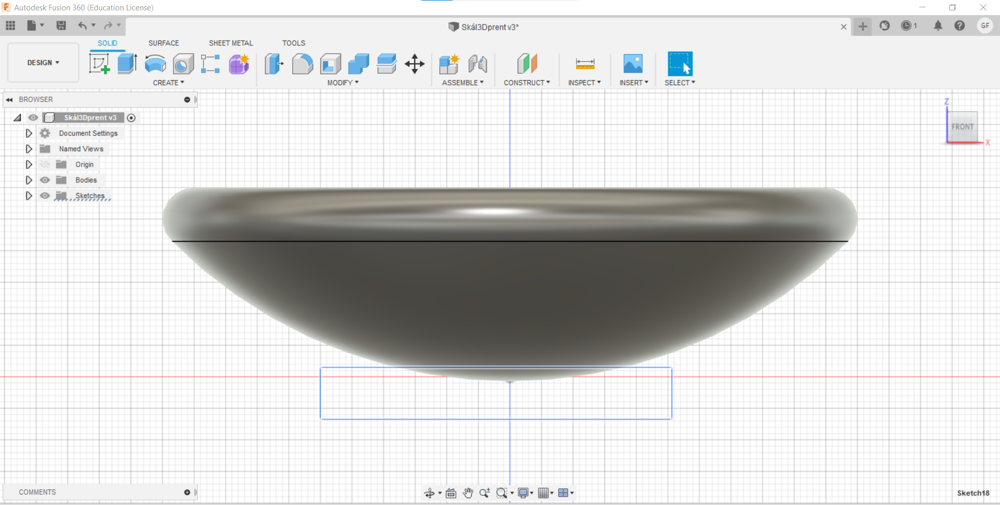
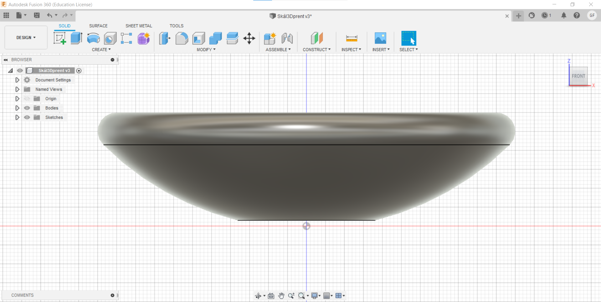
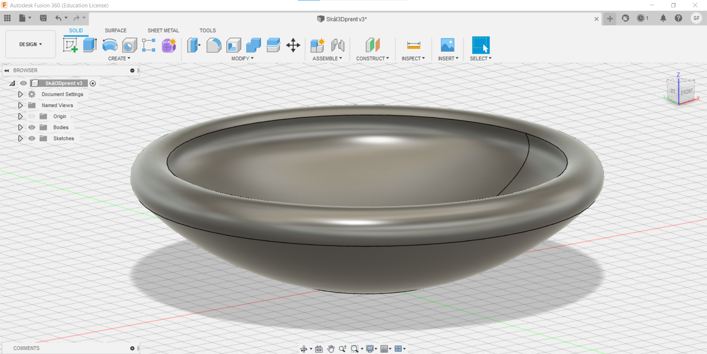
Nú var ég sáttur með útlitið og allt tilbúið til prentunar. Þá vel ég File->Export og þá opnast þessi gluggi hér.
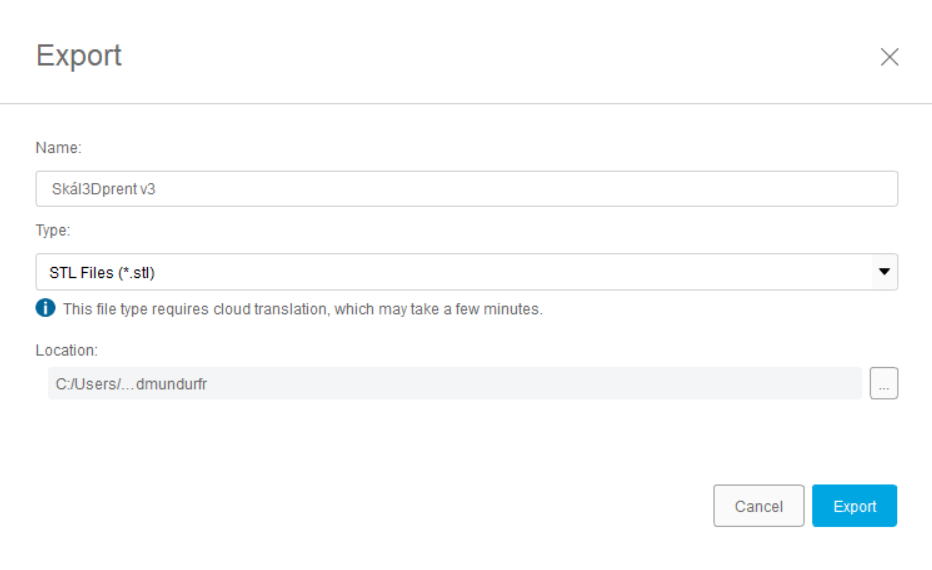
Ég vel að exporta skránni sem .stl skrá, en sú skráartegund er algengust þegar unnið er með 3D módel til prentunar.
Svo flyt ég þessa skrá yfir í tölvuna sem er hjá prenturunum uppí FabLab. Þar inni opna ég skránna í Ultimaker Cura sem gerir mér kleift að búa til skránna sem verður svo notuð til þess að prenta út módelið. Undir venjulegum kringumstæðum hefði ég prentað út módelið mitt í sama prentara og prufuna sem ég prentaði út í upphafi. Prufan var prentuð í Ultimaker 3 Extended en einu prentararnir sem voru lausir voru Prusa i3 MK3S. Ég ákvað því að nota niðurstöðurnar sem fengust úr prófinu en prenta samt út í Prusa prentaranum. Líklega mun það ekki hafa mikil áhrif á lokaniðurstöðuna þar sem þetta módel er frekar einfalt í prentun.
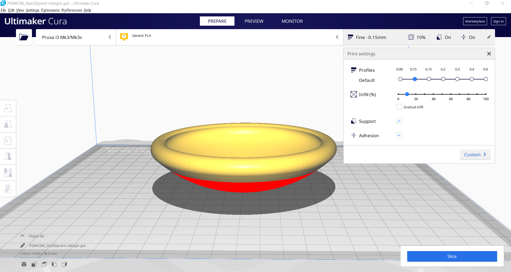
Í glugganum hægra megin get ég stillt nákvæmnlega hvernig ég vil prenta hlutinn minn. Ég þarf aðeins að breyta stillingunum og set á 10% infill svo minna efni fari í skálina. Hæðin á hverju lagi er stillt á 0.15mm, svo haka ég í bæði Support og Adhesion boxin. Support er nauðsynlegt þar sem ég veit að skálin mín hefur halla sem er meir en 50° og þar þarf prentarinn stuðning svo módelið komi rétt út. Adhesion þýðir að prentarinn mun prenta þunnt lag af efni neðst sem skálin verður svo prentuð á. Það gerir það að verkum að skálin verður stöðugri og prentunin þar af leiðandi nákvæmari og líklegri til þess að koma út eins og ég hafði ætlað mér.
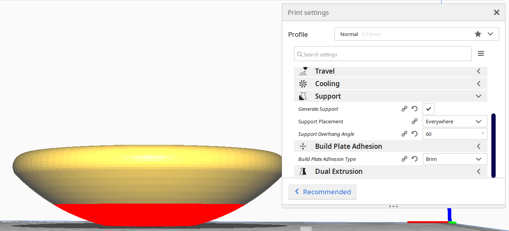
Hér stilli ég að styðja við allstaðar þar sem yfirhangið er meira en 60° halli. Vel svo að hafa Build Plate Adhesion stillt á Brim. Næst er ýtt á Slice takkann og við sjáum þá betur hvernig prentunin fer fram. Á myndinn getum við séð hvað hver litur segir okkur og hvernig prentunin fer fram. Á hreyfimyndinn sjáum við svo að við erum með 189 lög og sjáum hvernig prentarinn vinnur sig upp frá botninum þegar hluturinn er prentaður.
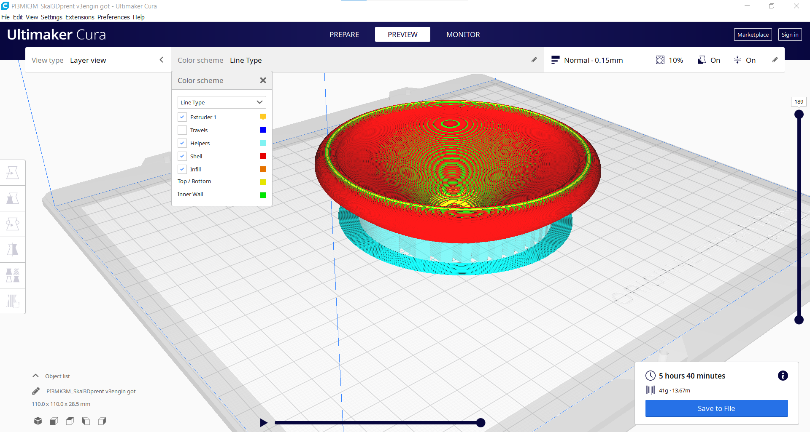

Sjáum að skv. Slicer mun hluturinn nota 41g af efni til prentunar og taka 5 klst og 40 mínútur. Svo er skráin vistuð á SD kort sem fer svo beint í Prusa prentarann. Þar vel ég skránna sem ég setti inná kortið og byrja að prenta. Efnið sem ég notaði til prentunar var PolyLite PLA plast, blátt á litinn.
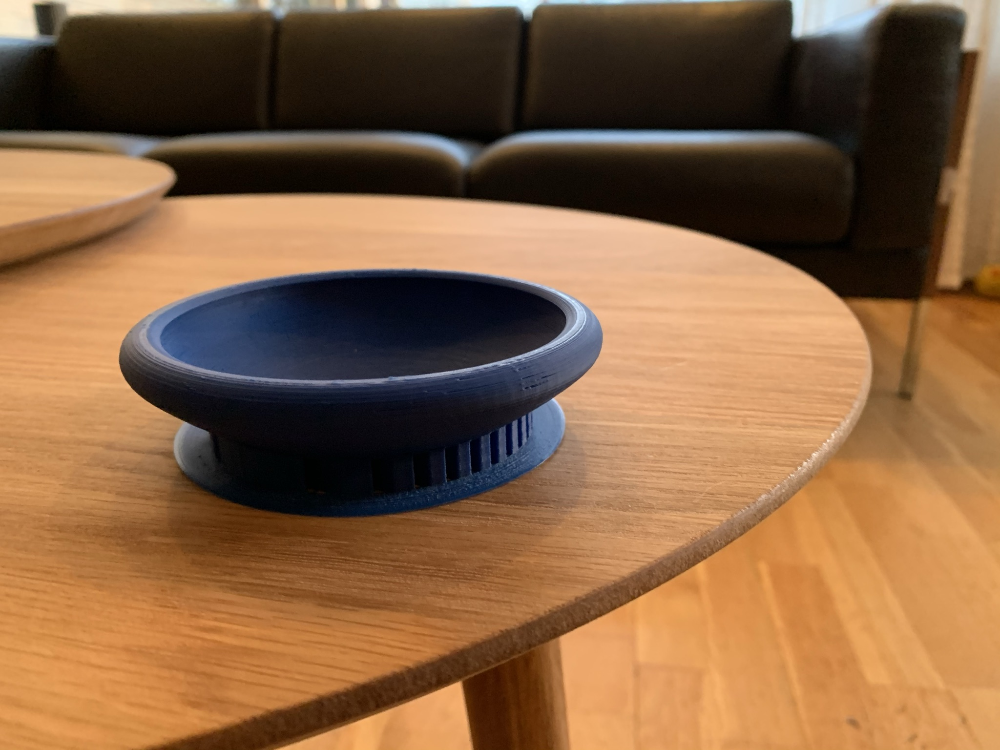
Skálin leit fyrst svona út með stuðningnum og Adhesion plötunni neðst. Ég tók hana svo af og þá leit skálin töluvert betur út.
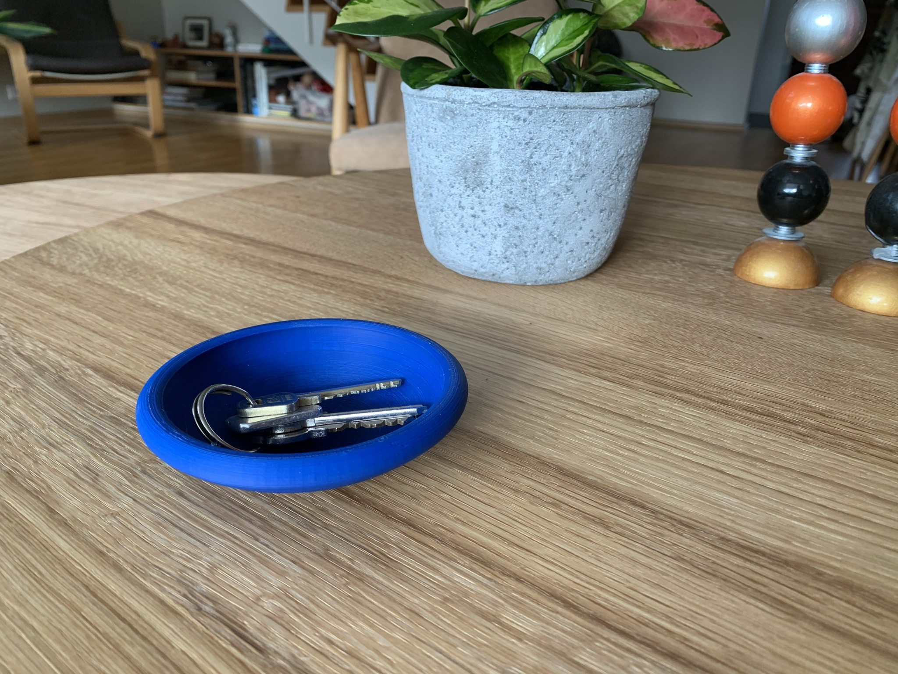
Ég var nokkuð sáttur með útkomuna og lærði ég heilmargt í leiðinni. 3D prentun er virkilega öflug framleiðsluaðferð sem setur manni fáar skorður, helsti gallinn er hve tímafrek hún er. Aðferðin er þó mjög nytsamleg við gerð á prótótýpum og eru þessir prentarar virkilega einfaldir og þægilegir í notkun.
Forrit sem ég notaði til þess að teikna módelið: Fusion 360
Forritið sem ég notaði til að undirbúa 3D módelið til prentunar: Ultimaker Cura
.stl skráin mín(3D módelið): Skál - 3D módel
3D skönnun
seinni hlut verkefnissins snéri að 3D skönnun með photogrammetríu. Það fyrsta sem ég gerði var að skoða verkefnin sem okkur var bent á. Þar sá ég að margir voru að nota Regard3D hugbúnaðinn og ég ákvað því að nota hann einnig sjálfur. Þegar ég var búinn að setja hann upp í tölvunni minni var næst á dagskrá að taka myndir til þess að nota. Ég ákvað að skanna húsið mitt sem ég bjó til í síðasta verkefni í þessum áfanga. Húsið getið þið séð hér. Ég tók alls rúmlega 300 myndir og setti þær svo inn á tölvuna. Ég tók myndir frá eins mörgum sjónarhornum og ég gat. Myndirnar litu nær allar einhvernvegin svona út en frá töluvert fleiri sjónarhornum.
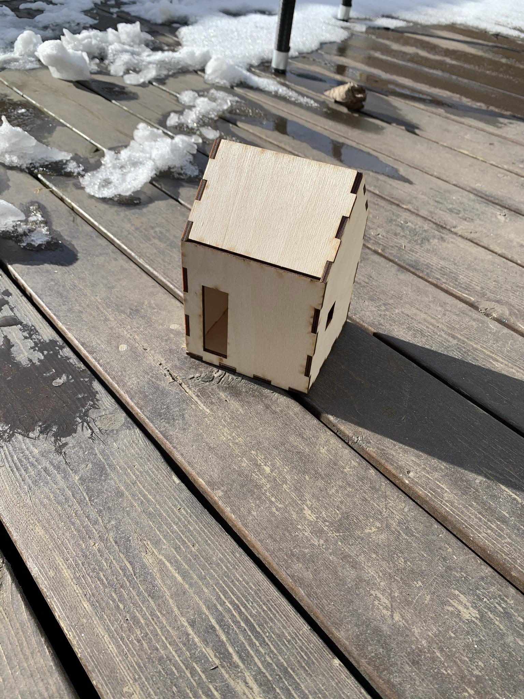
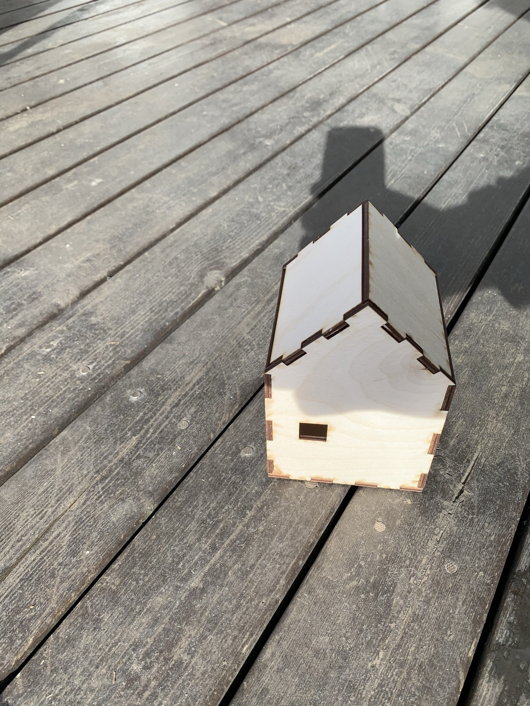
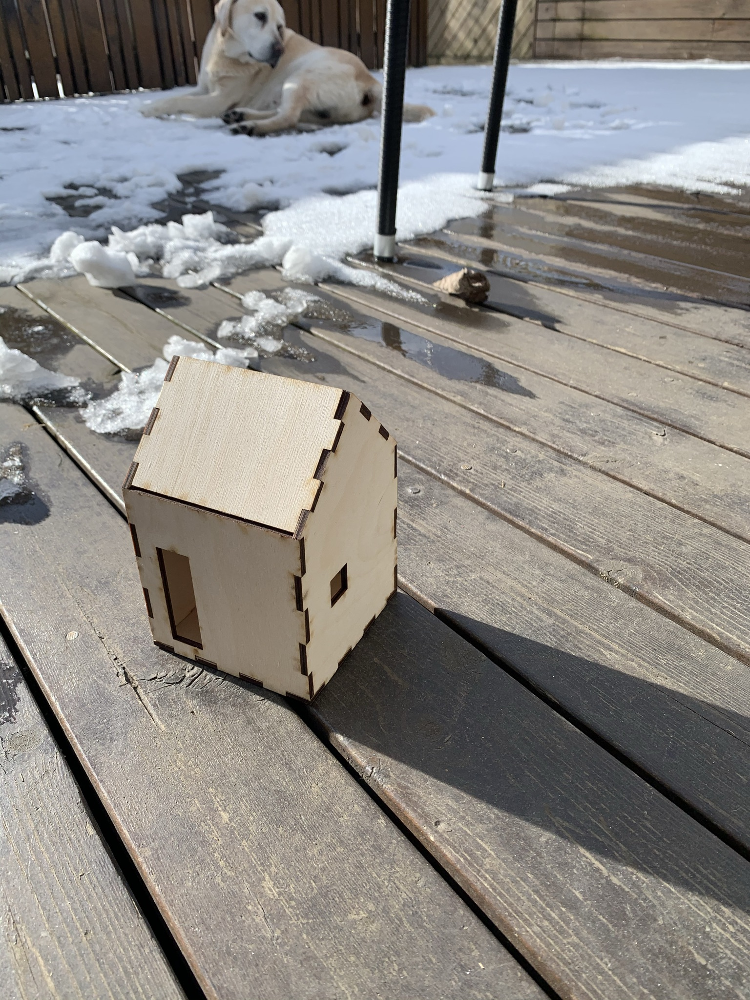
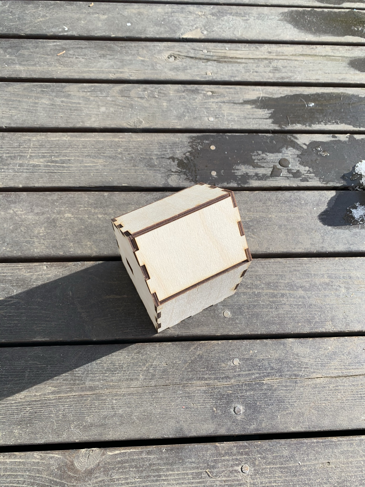
Næst opnaði ég Regard3D forritið og bjó til picture set úr myndunum sem ég tók. Þá vel ég einfaldlega
Add Picture Set -> Add Files og vel svo myndirnar sem ég tók.
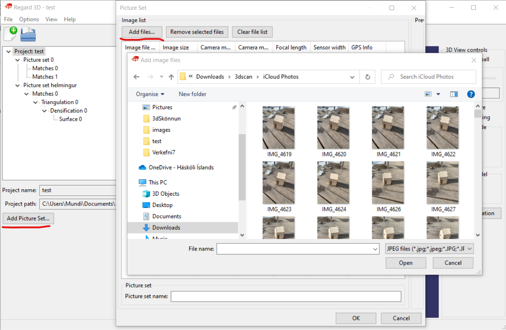
Fyrst valdi ég allar 300+ myndirnar sem ég hafði tekið og reyndi að vinna úr þeim. Það reyndist þó of tímafrekt og gafst ég upp eftir að hafa beðið í tæpan klukkutíma eftir fyrsta skrefinu. Ég reyndi þá aftur en tók aðeins um helminginn af myndunum inn í 'Picture Set'. Ég fylgdi einfaldlega skrefunum sem finna má hér. Þessar leiðbeiningar leiða mann vel í gegnum skrefin sem þarf að taka. Ég notaði einungis þær stillingar sem voru fyrirframstilltar, breytti semsagt engum stillingum við gerð módelsins.
Skrefin eru eftirfarandi:
1. Add Picture Set
2. Compute matches
3. Triangulation
4. Create dense pointcloud
5. Create Surface
6. Show surface
Hvert skref tekur mislangan tíma en sum skrefin krefjast þó nokkurra útreikninga sem geta tekið nokkrar mínútur eða tugi mínúta. Líkt og áður kom fram breytti ég engum stillingum ég einfaldlega valdi þessa 6 hnappa í þessari röð.
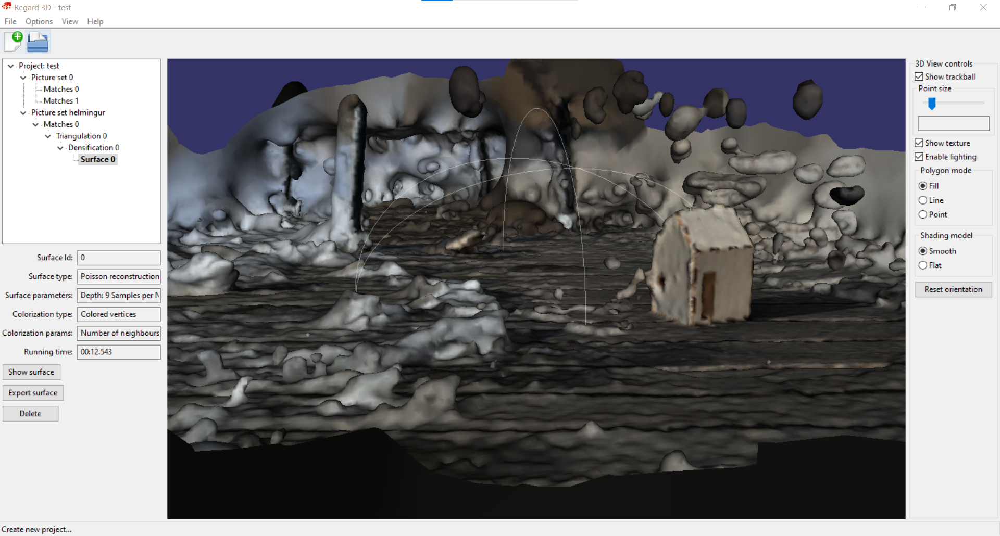
Hér er svo hægt að smella á 'Export surface' og þá fáum við .ply skrá. Módelið kom ágætlega út en ég tók myndirnar þó líklega aðeins og langt frá hlutnum sem ég ætlaði mér að skanna. Ég fékk því fullmikið af umhverfinu með í módelið.
Regard3D hugbúnaður: Regard 3D
.ply skráin: surface.ply
| Vinna í Fusion | 5 tímar |
| Undirbúningur fyrir prentun | 1 tími |
| Skjalfesta á heimasíðu | 6 tímar |
| Samtals | 12 tímar |
| Taka myndir | 0.5 tímar |
| Vinna í Regard3D | 2 tímar |
| Skjalfesta á heimasíðu | 5 tímar |
| Samtals | 7.5 tímar |